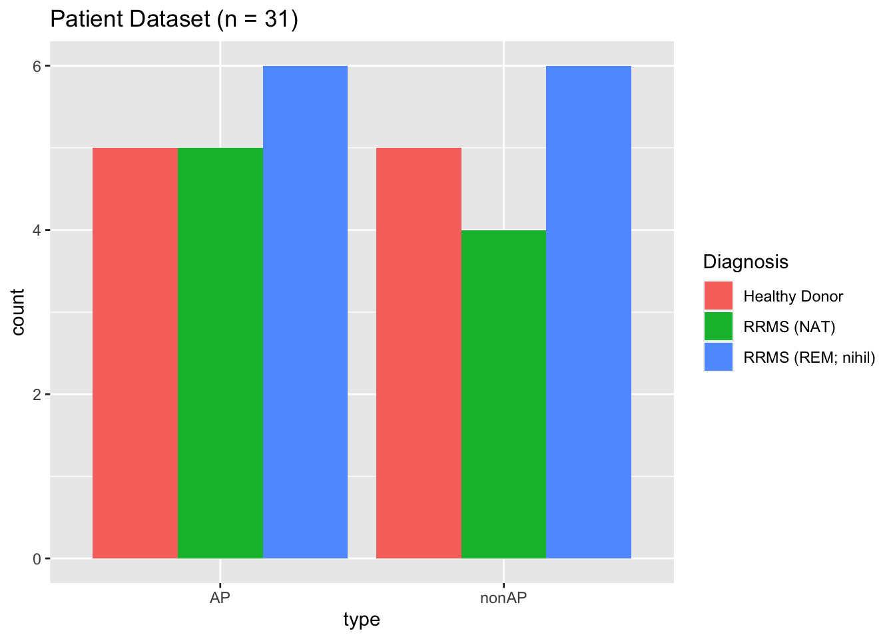
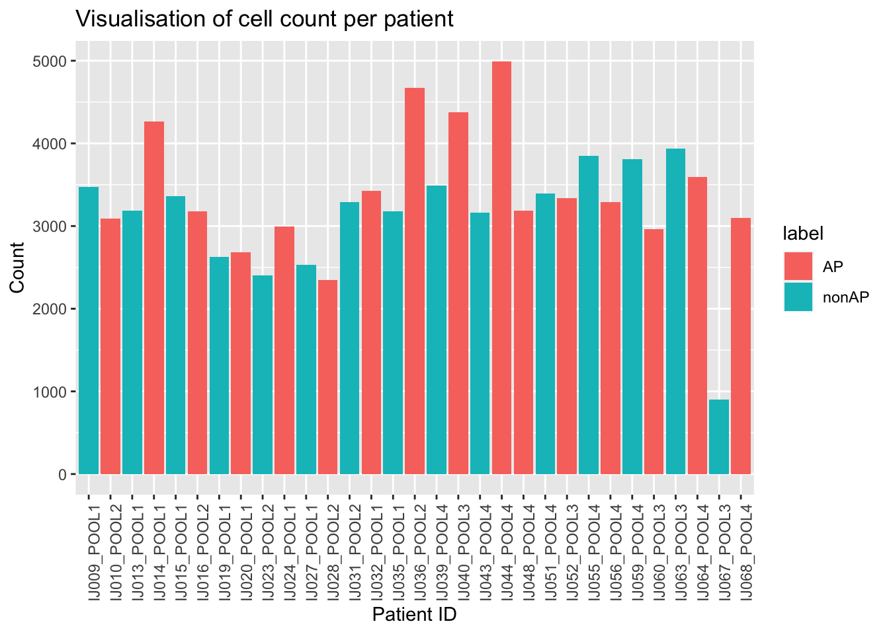

The patient meta-data was provided in an Rds file and was prepared with the following commands:
library(dplyr)
library(SummarizedExperiment)
library(stringr)
#loading the data and selecting the relevant columns
experiment = readRDS("/Users/martinemons/polybox/Universitaet/MSc_CBB/HS2020/Statistical Analysis of HSD/vdj-analysis-local/sce_B.rds", refhook = NULL)
cellUMI2SampleType_raw = colData(experiment) %>% as.data.frame
cellUMI2SampleType = cellUMI2SampleType_raw %>% select(lib_id, patient_id, Sample.Type, Diagnosis) %>% unique()
#counting the number of AP and nonAP patients
count_nonap <- sum(str_count(cellUMI2SampleType$Sample.Type, "CFSEhi CD19+"))
count_ap <- sum(str_count(cellUMI2SampleType$Sample.Type, "CFSEdim CD19+"))The number of AP patients in the dataset is 16 and the number of nonAP patients is 15.
Next the composition of the dataset will be visualised
library(ggplot2)
#adding a column specifying AP vs nonAP
for(i in 1:31){
if(cellUMI2SampleType$Sample.Type[i] == "CFSEhi CD19+"){
cellUMI2SampleType$type[i] = "nonAP"
}
else{
cellUMI2SampleType$type[i] = "AP"
}
}
#visualisation of the patient composition
p <- ggplot(cellUMI2SampleType, aes(x = type, fill = Diagnosis)) +
geom_bar(position="dodge") +
ggtitle("Patient Dataset (n = 31)")
p
We see that the composition is quite homogeneous, we have a similar number of patients for both conditions (AP vs. nonAP) and for the diagnosis/treatment (RRMS (NAT), RMS (REM; nihil), Healthy Donor).
Next we want to inspect how many cells we have per patient
library(reshape)
labels <- cellUMI2SampleType$lib_id
countlabel <- t(c(rep(0,31))) %>% as.data.frame()
colnames(countlabel) <- labels
rownames(countlabel) <- "count"
#counting the number of cells per patient ID
for(label in labels){
countlabel[label] <- sum(str_count(cellUMI2SampleType_raw$lib_id, label))
}
countlabel <- melt(countlabel)
countlabel$label <- cellUMI2SampleType$type
#counting the number of cells per condition
cells_ap = 0
cells_nonap = 0
for(i in 1:31){
if(countlabel[i,"label"] == "AP"){
cells_ap = cells_ap + countlabel[i,"value"]
}
else{
cells_nonap = cells_nonap + countlabel[i,"value"]
}
}
#visualisation of the cell counts per patient
p <- ggplot(countlabel, aes(x = variable, y= value, fill = label)) + geom_bar(stat='identity') + theme(axis.text.x = element_text(angle = 90)) + xlab("Patient ID") + ylab ("Count") + ggtitle("Visualisation of cell count per patient")
p
We see that we have in the range of cell counts in the range of \(\sim\) 1000 up to \(\sim\) 5000. Over the two conditions AP and nonAP we see that the distribution is quite similar with 5.5493^{4}AP cells and 4.6607^{4} nonAP cells, which again points to a well balanced dataset.